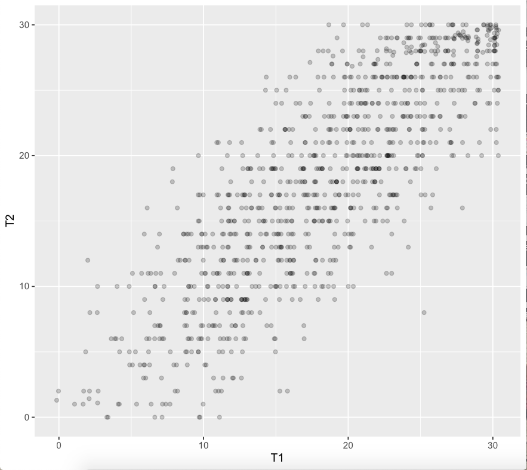

Rzetelność - jak dobrze test mierzy to, co mierzy
Małgorzata Basińska
Cel zajęć
Po zajęciach powinniście umieć
- podać definicję rzetelności
- wytłumaczyć, o co chodzi z błędem i wynikiem prawdziwym w myśl klasycznej teorii testów
- wskazać główne źródła błędu w pomiarze testowym
Po co nam wiedza o rzetelności
- informacje o wynikach uzyskanych przez pacjentów/klientów w testach są nieodłączną częścią pracy psychologa
- odpowiedzialne korzystanie z takich informacji wymaga wiedzy:
- o tym, że wynik testu nie odzwierciedla idealnie poziomu danej cechy u badanego
- jak interpretować wynik testowe korzystając z wiedzy o rzetelności i błędzie pomiaru
- dzięki dorobkowi psychometrii w tym zakresie testy psychologiczne stają się coraz dokładniejszymi narzędziami pomiaru
Klasyczna teoria testów
Definicja rzetelności wg S. Urbiny (2014)
Rzetelność to właściwość wyników testowych
sugerująca, że są one wystarczająco stabilne
i wolne od błędu pomiaru by były użyteczne.
Definicja rzetelności wg Standardów (AERA, APA, & NCME, 2007)
Stopień, w jakim wyniki testowe otrzymane dla
grupy osób są stabilne oraz nie zmieniają się
w kolejnych badaniach tym samym testem;
mogą być uznane za powtarzalne i rzetelnedla osoby badanej;
także stopień, w jakim wyniki testowe są wolne
od błędu pomiaru dla danej grupy.
Innymi słowy
Jeżeli zakładamy, że badamy jakąś cechę, której poziom u danej osoby jest względnie stały w czasie a nasz test za każdym razem daje zupełnie inny wynik, to taki test jest całkowicie bezużyteczny.
Zadanko 1
Pytanie
Czy istnieje idealne narzędzie pomiarowe?
Takie, które daje pomiar nieobarczony błędem?
Co składa się na wynik uzyskany w teście
\[X_O=X_t+X_e\] \(X_O\) - wynik obserwowany
\(X_t\) - wynik prawdziwy
\(X_e\) - błąd
WYNIK PRAWDZIWY

Co to jest wynik prawdziwy - jak go sobie wyobrazić
Hipotetyczny wynik idealnie odzwierciedlający poziom mierzonej cechy u osoby badanej, czytaj: nieobarczony błędem.
Co to jest wynik prawdziwy w myśl klasycznej teorii testów
Wynik osoby badanej, gdybyśmy przebadali ją tym samym testem nieskończoną liczbę razy. \[\infty\]
Definicja rzetelności wzorem
\[r_{xx}=\frac{s^2_t}{s^2}\]
\[s^2=s^2_t+s^2_e\]
Błąd losowy vs błąd systematyczny
- Odkrywasz (mniejsza o to jak :)), że za każdym razem kiedy się ważysz waga dodaje 1 kg - jaki to błąd?
- Zmierzyłeś/aś wysokość swojego pokoju przykładając centymetr krawiecki do ściany. Zrobiłeś/aś to 10 razy i za każdym razem uzyskałeś trochę inny wynik - jaki to błąd?
Założenia klasycznej teorii testów
- \(X_O=X_t+X_e\) (na wynik obserwowany składa się wynik prawdziwy i błąd)
- Błąd ma charakter losowy, więc:
- Gdybyśmy badali tę samą osobę danym testem nieskończenie wiele razy, to średni błąd wynosiłby 0
- Korelacja błędu i wyniku prawdziwego wynosi 0
- W dwóch kolejnych badaniach tym samym testem korelacja błędu wynosi zero
Prosty przykład oceny rzetelności testu psychologicznego
Jak to wszystko przełożyć na testy psychologiczne
- Nie mamy możliwości badania tej samej osoby testem w \(\infty\)
- Mamy za to możliwość zbadania wielu osób…
- I wykonania >1 (zwykle 2) pomiarów
| N | T1 | T2 |
|---|---|---|
| 1 | 16 | 17 |
| 2 | 35 | 34 |
| 3 | 13 | 10 |
| .. | .. | .. |
| n | .. | .. |
N - id badanego; T1 - wynik w pierwszym pomiarze; T2 - wynik w drugim pomiarze
Przykład
- Badamy rzetelność SES Rosenberga.
- Badani wypełniają SES dwa razy w odstępie tygodnia.
- Wyniki w teście podczas pierwszego pomiaru oznaczamy jako T1.
- Wyniki w teście podczas drugiego pomiaru oznaczamy jako T2.
- Uwaga: wyniki dla retestu w podanym przykładzie zostały wygenerowane losowo. Proszę nie traktować ich poważnie :)
Jak to policzymy
Współczynnik korelacji Pearsona dla wyników pierwszego (test) i drugiego (retest) pomiaru.
\[r_{tt}=\frac{\sum_{i=1}^n(\bar{t_1}-t_{1i})(\bar{t_2}-t_{2i})}{\sqrt{\sum_{i=1}^{n}(\bar{t_{1i}}-t_{1i})^2} \sqrt{\sum_{i=1}^{n}(\bar{t_2}-t_{2i})^2}}\]
Otrzymaliśmy taki wynik
r = 0.8241061

Jak świadczy on o rzetelności narzędzia?
Źródła błędu podczas testowania
Wynik obserwowany raz jeszcze
\[X_O=X_t+X_e\] \(X_O\) - wynik obserwowany
\(X_t\) - wynik prawdziwy
\(X_e\) - błąd
Jakie są źródła błędu podczas testowania (McIntire & Miller, 2007)(Urbina, 2014)
proszę wyjąć coś do pisania :)
kontekst przeprowadzenia testu
- ocena testu
osoby badane
konstrukcja testu (test sam w sobie)
Literatura
Literatura
AERA, APA, & NCME. (2007). Standardy dla testów stosowanych w psychologii i pedagogice. Gdańsk: Gdańskie Wydawnictwo Psychologiczne.
McIntire, S. A., & Miller, L. A. (2007). Foundations of Psychological Testing: A Practical Approach. Retrieved from https://books.google.pl/books?id=dB0fw5lf0GQC
Urbina, S. (2014). Essentials of Psychological Testing (II). Retrieved from https://books.google.pl/books?id=UnHrAwAAQBAJ